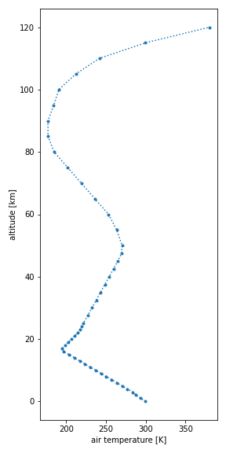
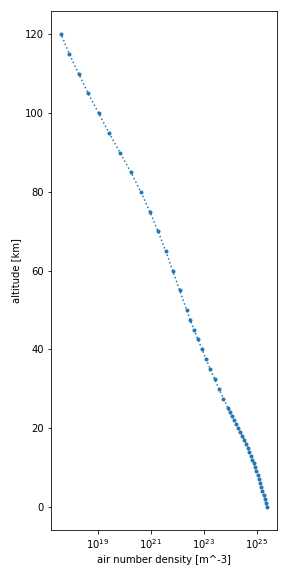

How-to guides¶
Quickstart¶
The main interface of Joseki is its make method. This method creates the atmospheric profile corresponding to a given identifier. For example, make the so-called AFGL US Standard atmospheric profile from Anderson et al (1986) with:
Display the available identifiers with:
Use the to_netcdf
method to save the dataset to the disk as a
netCDF file:
For other formats, refer to the xarray IO documentation.
Saving to CSV file
Note that one drawback of saving to a CSV file in the above manner is that the information on the quantity units is lost.
Open the dataset again using
open_dataset:
The datasets format is described here.
Altitude grid¶
You can specify the altitude grid for your atmospheric profile. If the source atmospheric profile is based on tabulated data, it is going to be interpolated on the specified altitude grid.
Example
For more information about units specifications, please refer to the pint documentation.
Alternatively, instead of using a list you can also specify the altitude values as a Numpy array:
Example
Or use Joseki's unit registry directly:
Example
During interpolation, the column number densities associated to the different
atmospheric constituents are likely going to be changed.
In the example above, the ozone column number density is increased to
346.60 Dobson units compared to the atmospheric profile with the original
altitude grid, which has an ozone column number density of 345.75 Dobson units.
To ensure column densities are conserved during interpolation, set the
conserve_column parameter to True.
Example
Molecules selection¶
You might be interested only in the mole fraction data of specific molecules.
To select the molecules you want to be included in your profile, specify them
with the molecules parameter:
In the above example, the mole fraction data covers the molecules H2O, CO2 and O3 only.
Advanced options¶
The collection of atmospheric profiles defined by
Anderson et al (1986) includes mole fraction
data for 28 molecules, where molecules 8-28 are described as additional.
By default, these additional molecules are included in the atmospheric profile.
To discard these additional molecules, set the additional_molecules
parameter to False:
The resulting dataset now includes only 7 molecules, instead of 28.
Derived quantities¶
You can compute various derived quantities from a thermophysical properties
dataset produced by joseki, as illustrated by the examples below.
Column number density
For further details on these methods, refer to the API reference.
Rescaling¶
You can modify the amount of a given set of molecules in your thermophysical properties dataset by applying a rescale transformation.
Example
In the example above, the amount of water vapor is halfed whereas the amount of
carbon dioxide and methane is increased by 150% and 110%, respectively.
When a rescale transformation has been applied to a dataset, its history
attribute is updated to indicate what scaling factors were applied to what
molecules.
If you do not know the scaling factors but instead the target amounts that you want for each molecule, the rescale_to transformation might be more relevant.
Example
In the example above, each molecule is associated a target amount that must be reached in the rescaled profile. As illustrated in the example, different quantities—e.g. column mass density, mole fraction at sea level and column number density—are supported to specify the target amount. The corresponding amount are computed for the initial profile and the scaling factors are given by the ratios of the target and initial amounts.
Plotting¶
Note
For plotting, you will need to install the matplotlib library.
You can easily make a plot of any of the variables of a dataset, i.e.,
air pressure (p), air temperature (t), air number density (n) or
mole fraction (x_*):
Pressure plot
import matplotlib.pyplot as plt
ds = joseki.make(
identifier="afgl_1986-us_standard",
additional_molecules=False
)
ds.p.plot(
figsize=(4, 8),
ls="dotted",
marker=".",
y="z",
xscale="log",
)
plt.show()

Temperature plot

Number density plot
